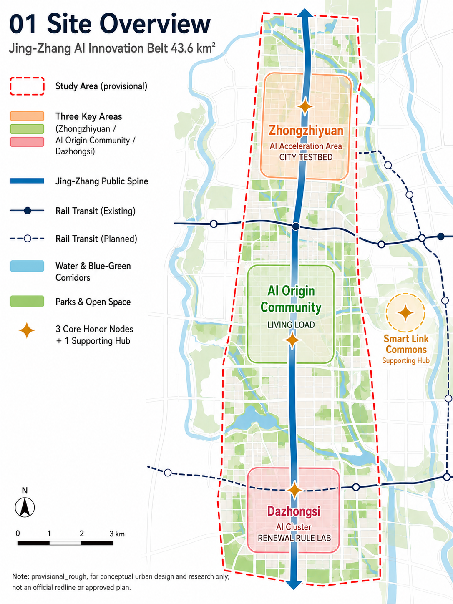
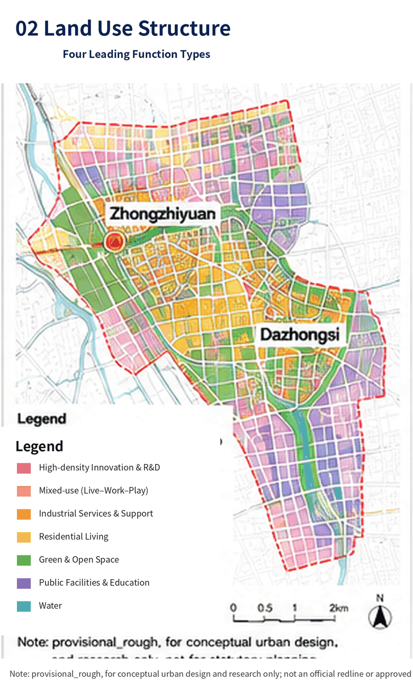
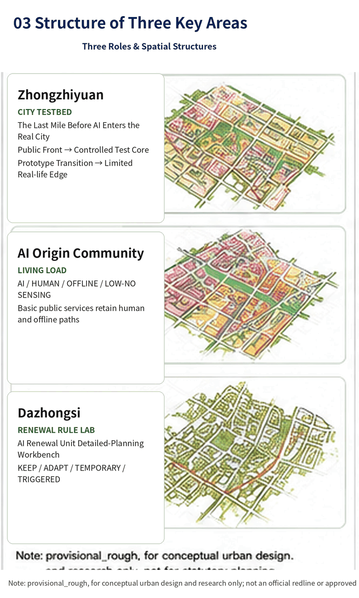
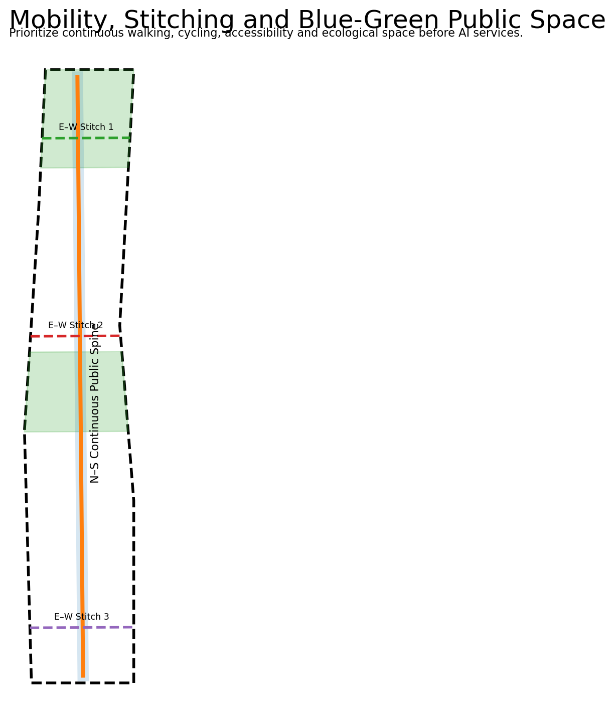
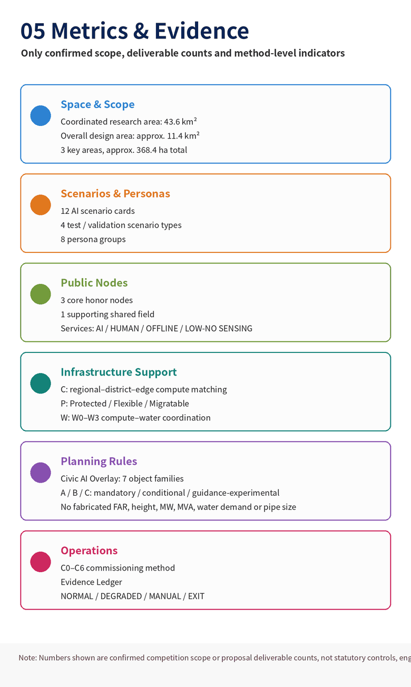

Core Metrics
Overview

Land Use & Civic AI Overlay

Key Areas

Mobility & AI Infrastructure Adaptation

Metrics & Evidence

Design Logic
Urban-design body: the Jing-Zhang public spine + Zhongzhiyuan CITY TESTBED + AI Origin LIVING LOAD + Dazhongsi RENEWAL RULE LAB.
First planning innovation: the Civic AI Overlay makes compute interfaces, permissions, human-equivalent access, model versions, retest and exit conditions machine-readable planning objects.
AI infrastructure: Compute Matching / Compute–Power / Compute–Water; communications, utilities and logistics remain supporting conditions.
Operating method: C0-C6 and the Evidence Ledger verify and record rather than dominate the concept.
Task Coverage
agent.1-agent.6, three scope levels, three key areas, 12 scenarios, four validation scenarios, eight personas and four AI landmarks are mapped into narrative and machine-readable matrices.
Self-check Status
Repository CI is the final judge. The local package is organized around deterministic, spatial, visual, and professional-evidence gates.
Sources & Assumptions
OverviewThree-level scopeKey areasLand useMobilityBlue-greenBuildingsRenewal projectsAI scenariosCore metricsTask coverageSelf-checkSourcesAssumptions
The provisional boundary is not an official redline. Missing regulatory, ownership, heritage and utility-capacity data are not fabricated by AI and remain explicit recalculation triggers.